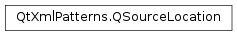

QSourceLocation¶
Synopsis¶
Detailed Description¶
The
PySide2.QtXmlPatterns.QSourceLocationclass identifies a location in a resource by URI, line, and column.
PySide2.QtXmlPatterns.QSourceLocationis a simple value based class that has three properties,PySide2.QtXmlPatterns.QSourceLocation.uri(),PySide2.QtXmlPatterns.QSourceLocation.line(), andPySide2.QtXmlPatterns.QSourceLocation.column(), that, taken together, identify a certain point in a resource, e.g., a file or an in-memory document.
PySide2.QtXmlPatterns.QSourceLocation.line()andPySide2.QtXmlPatterns.QSourceLocation.column()refer to character counts (not byte counts), and they both start from 1, as opposed to 0.
-
class
PySide2.QtXmlPatterns.QSourceLocation¶ -
class
PySide2.QtXmlPatterns.QSourceLocation(other) -
class
PySide2.QtXmlPatterns.QSourceLocation(uri[, line=-1[, column=-1]]) Parameters: - other –
PySide2.QtXmlPatterns.QSourceLocation - line –
PySide2.QtCore.int - column –
PySide2.QtCore.int - uri –
PySide2.QtCore.QUrl
Construct a
PySide2.QtXmlPatterns.QSourceLocationthat doesn’t identify anything at all.For a default constructed ,
PySide2.QtXmlPatterns.QSourceLocation.isNull()returnstrue.Constructs a
PySide2.QtXmlPatterns.QSourceLocationthat is a copy ofother.Constructs a
PySide2.QtXmlPatterns.QSourceLocationwith URIu, lineland columnc.- other –
-
PySide2.QtXmlPatterns.QSourceLocation.column()¶ Return type: PySide2.QtCore.qint64Returns the current column number. The column number refers to the count of characters, not bytes. The first column is column 1, not 0. The default value is -1, indicating the column number is unknown.
-
PySide2.QtXmlPatterns.QSourceLocation.isNull()¶ Return type: PySide2.QtCore.boolReturns
trueif thisPySide2.QtXmlPatterns.QSourceLocationdoesn’t identify anything.For a default constructed
PySide2.QtXmlPatterns.QSourceLocation, this function returnstrue. The same applies for any otherPySide2.QtXmlPatterns.QSourceLocationwhosePySide2.QtXmlPatterns.QSourceLocation.uri()is invalid.
-
PySide2.QtXmlPatterns.QSourceLocation.line()¶ Return type: PySide2.QtCore.qint64Returns the current line number. The first line number is 1, not 0. The default value is -1, indicating the line number is unknown.
-
PySide2.QtXmlPatterns.QSourceLocation.__ne__(other)¶ Parameters: other – PySide2.QtXmlPatterns.QSourceLocationReturn type: PySide2.QtCore.boolReturns
trueif thisPySide2.QtXmlPatterns.QSourceLocationis not equal toother;falseotherwise.
-
PySide2.QtXmlPatterns.QSourceLocation.__eq__(other)¶ Parameters: other – PySide2.QtXmlPatterns.QSourceLocationReturn type: PySide2.QtCore.boolReturns
trueif thisPySide2.QtXmlPatterns.QSourceLocationis equal toother;falseotherwise.Two
PySide2.QtXmlPatterns.QSourceLocationinstances are equal if theirPySide2.QtXmlPatterns.QSourceLocation.uri(),PySide2.QtXmlPatterns.QSourceLocation.line()andPySide2.QtXmlPatterns.QSourceLocation.column()are equal.PySide2.QtXmlPatterns.QSourceLocationinstances for whichPySide2.QtXmlPatterns.QSourceLocation.isNull()returns true are considered equal.
-
PySide2.QtXmlPatterns.QSourceLocation.setColumn(newColumn)¶ Parameters: newColumn – PySide2.QtCore.qint64Sets the column number to
newColumn. 0 is an invalid column number. The first column number is 1.
-
PySide2.QtXmlPatterns.QSourceLocation.setLine(newLine)¶ Parameters: newLine – PySide2.QtCore.qint64Sets the line number to
newLine. 0 is an invalid line number. The first line number is 1.
-
PySide2.QtXmlPatterns.QSourceLocation.setUri(newUri)¶ Parameters: newUri – PySide2.QtCore.QUrlSets the URI to
newUri.
-
PySide2.QtXmlPatterns.QSourceLocation.uri()¶ Return type: PySide2.QtCore.QUrlReturns the resource that this
PySide2.QtXmlPatterns.QSourceLocationrefers to. For example, the resource could be a file in the local file system, if the URI scheme isfile.
© 2018 The Qt Company Ltd. Documentation contributions included herein are the copyrights of their respective owners. The documentation provided herein is licensed under the terms of the GNU Free Documentation License version 1.3 as published by the Free Software Foundation. Qt and respective logos are trademarks of The Qt Company Ltd. in Finland and/or other countries worldwide. All other trademarks are property of their respective owners.